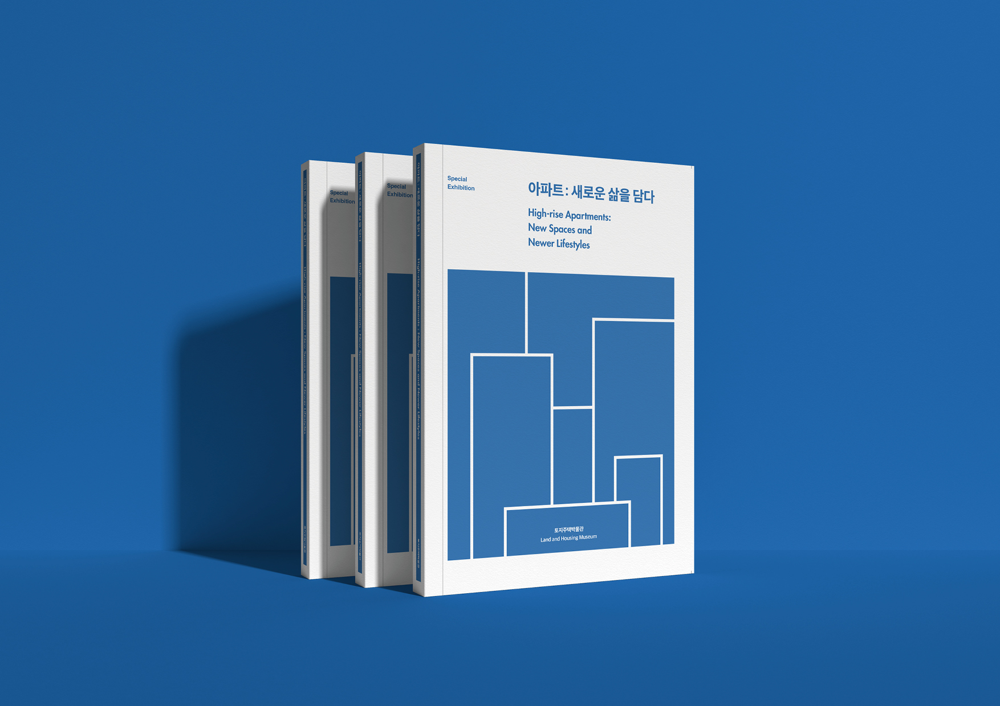
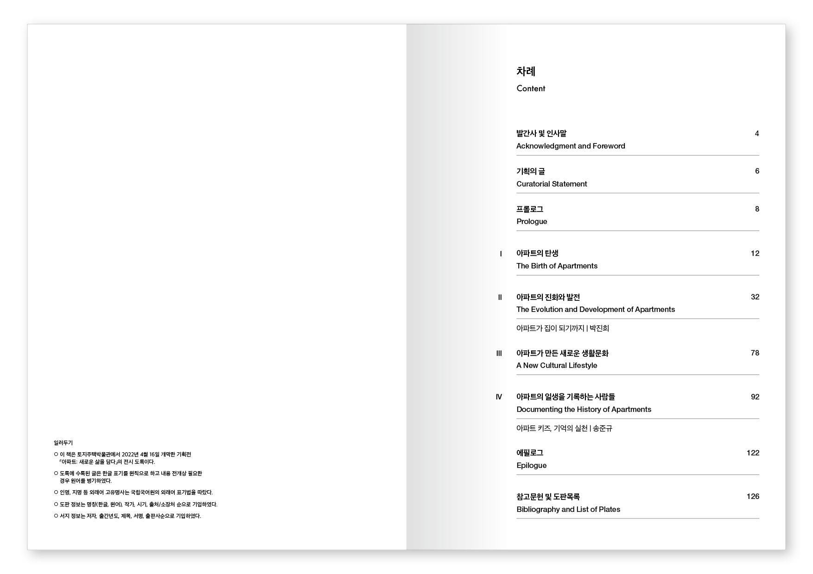
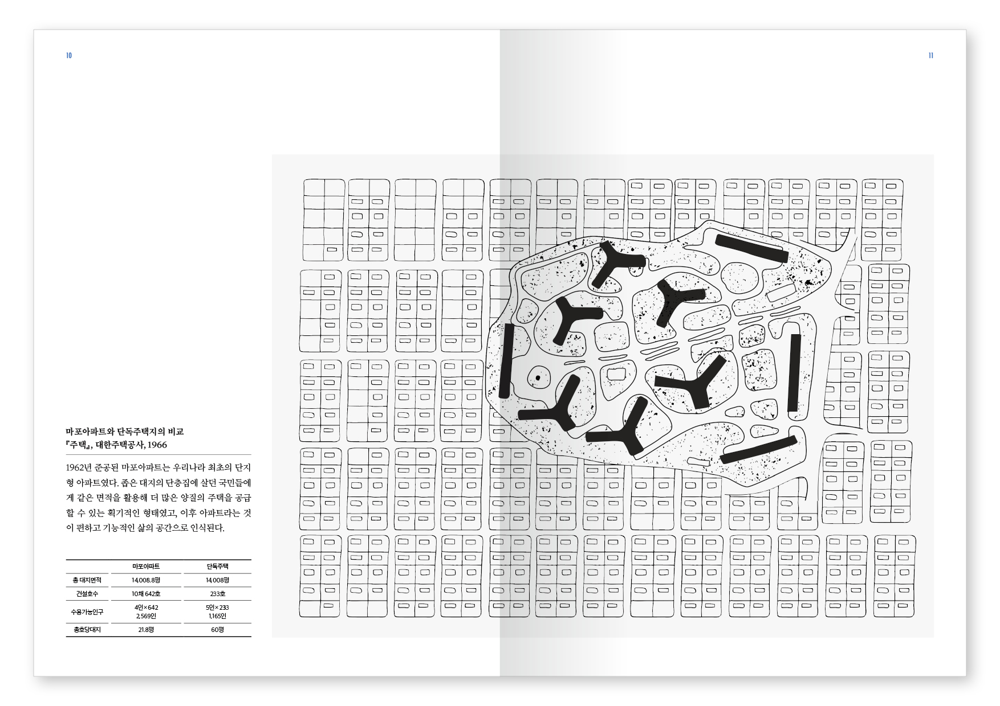
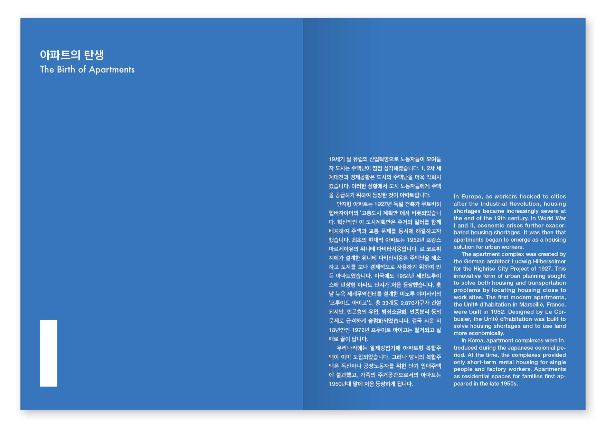
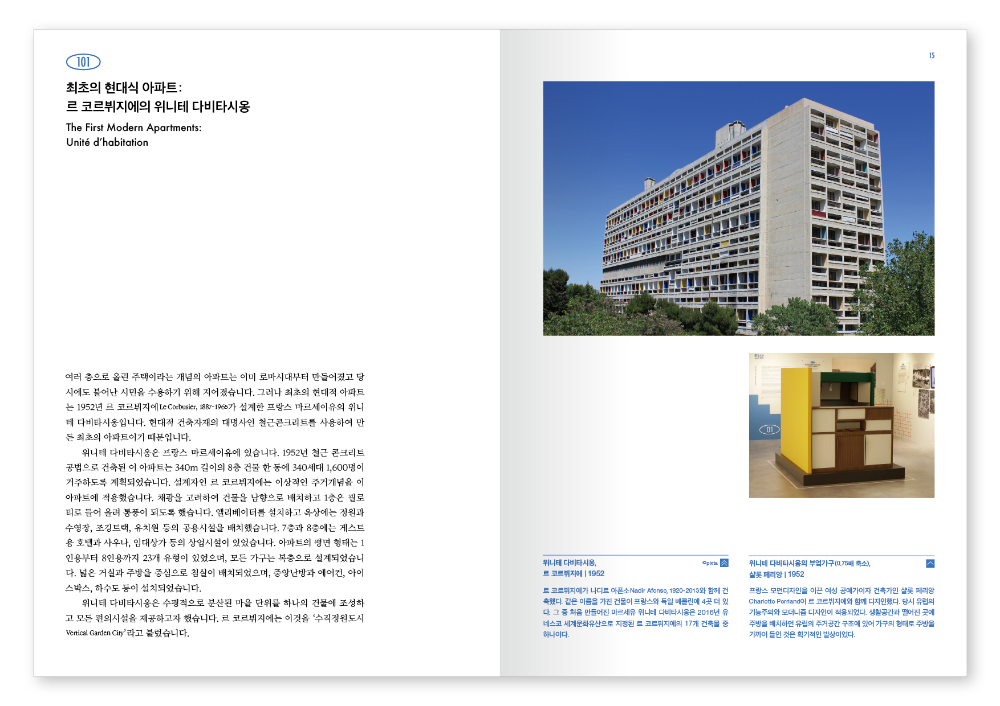
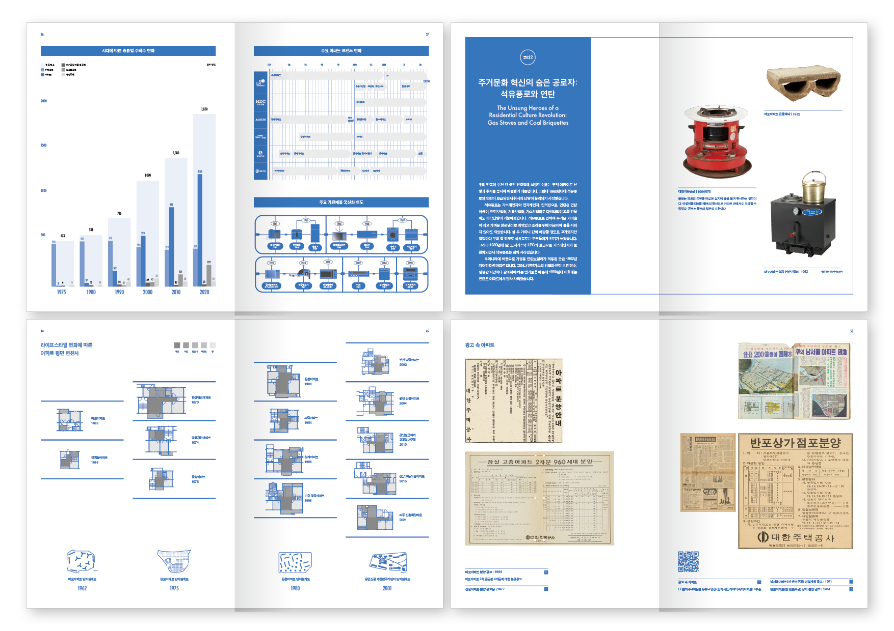
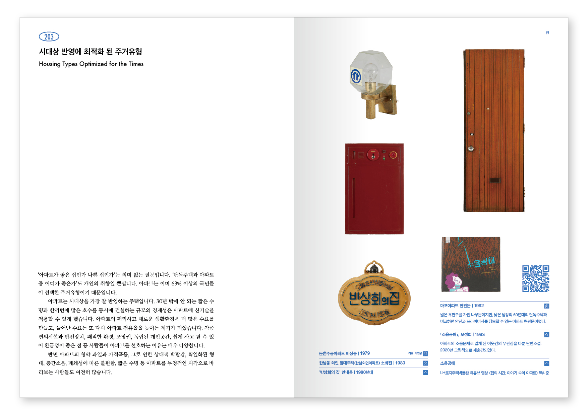
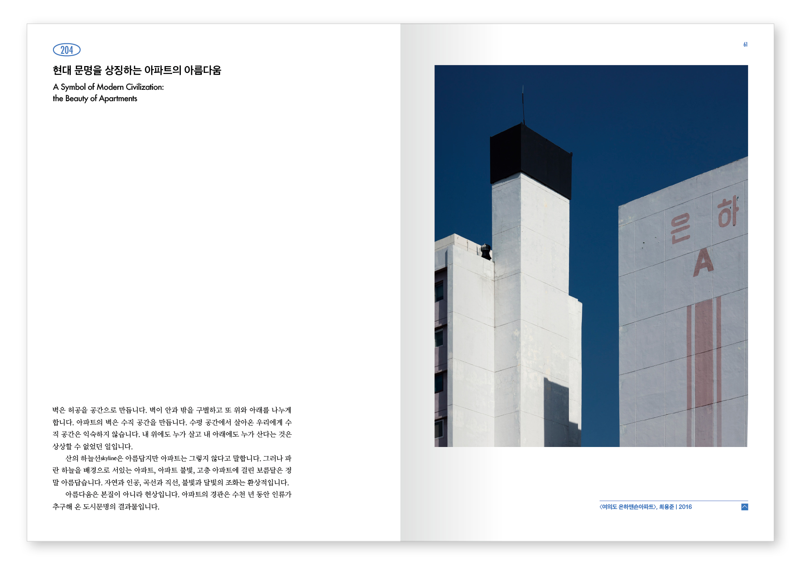
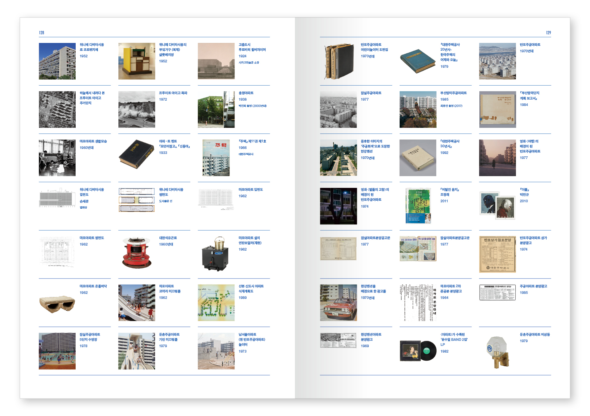
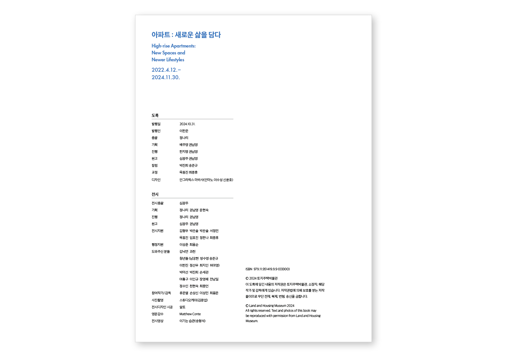

아파트라는 주거 형식이 한국 사회에 정착하며 일상이 된 과정을 기록한 전시 도록.
토지주택박물관에서 진행한 기획전 《아파트: 새로운 삶을 담다》의 공식 도록. 1960년대 이후 한국의 도시화와 함께 급속히 확산된 아파트 문화의 역사적 흐름과 삶의 방식의 변화를 담아낸 전시를 글과 이미지로 기록한다.
도록은 전시의 서사를 그대로 따라가며, 당대의 기록 사진과 아카이브 자료를 적절히 편집하여 아파트라는 공간이 어떻게 한국인의 삶 속에 뿌리내렸는지를 차분하게 들여다본다.
타이포그래피와 레이아웃 전반은 기록의 시간성을 시각화하는 방향으로 설계되었으며, 아카이브적 감각과 동시대적 편집 미감 사이에서 균형을 찾는다.








